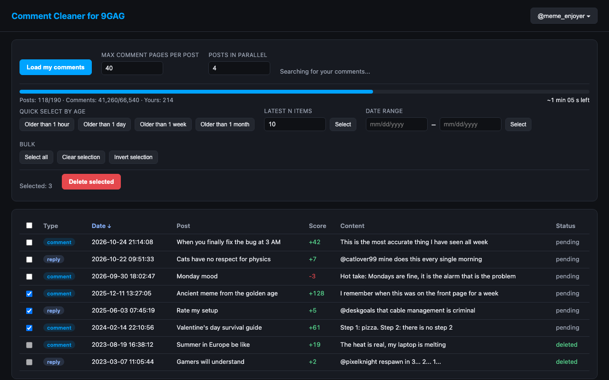

Comment Cleaner for 9GAG
Find all your 9GAG comments and replies, select them by date and delete them in bulk.

Features
- Finds every comment and reply you wrote, including ones deep in reply threads
- Fast parallel scanning with a progress bar and time estimate
- Select by age, latest N, date range, or pick comments by hand
- Everything runs locally in your browser – no server, no analytics, no tracking